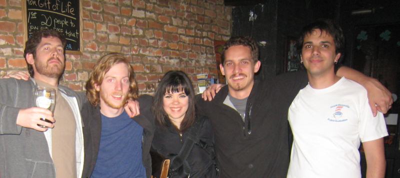

About Me
I'm a software developer living in Philadelphia.
I like Scala and functional programming.
Open Source Software
I contribute to these projects:
-
Alacs - A static analysis tool for Scala
-
Flashup - A simple markup language for creating flashcards
-
Penn TotalRecall - An easy-to-use tool for quickly annotating audio files
-
OrangeExtensions - A pluggable jar containing stubs for the Apple Java Extensions, updated for Java 5 & 6
-
gtkjfilechooser - A prettier JFileChooser for Swing's GTK look and feel
-
Wellner PDTB Head Extraction - Python implementation of Ben Wellner's Penn Discourse Treebank head extraction algorithm
-
ShowTree - A Java Swing application for producing pretty drawings of trees (i.e., acyclic connected graphs)
I'm always looking for fun open source opportunities, so feel free to drop me a line if you have something in mind.
Flashcards
I make lots of flashcards.
My Accounts
You can find me on Facebook, GitHub, Amazon, StackOverflow, OpenHatch, Google Code, and permanently lurking on ##penn and #scala on freenode.
Pictures

Me (far right) and some of the GitHub crew at the Philly stop of their East Coast Tour.
And with long hair.
Talks (HTML5, view in Google Chrome)
Contact
ymasory@gmail.com